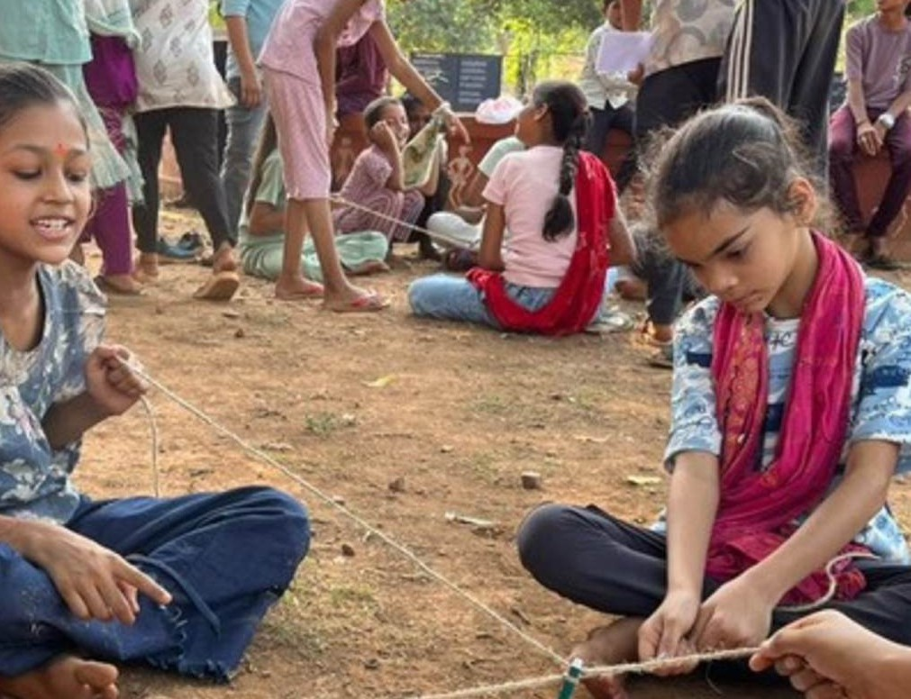
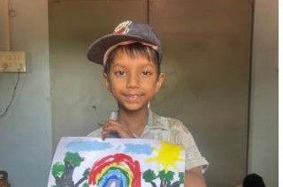
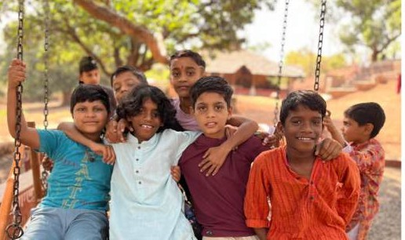
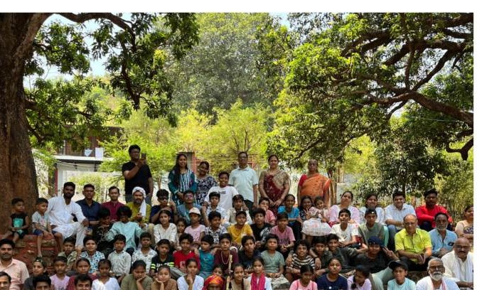

What it is
यह क्या है
Mitti Ki Mahak is a summer camp at Jeevika Ashram, run alongside the nearby village of Indrana. It brings urban children — usually with little exposure to village life — together with local village children, through pottery, cooking, gobar art, charkha (spinning wheel), painting, forest and river walks, and collaborative games, over 10 days.
मिट्टी की महक जीविका आश्रम में लगने वाला एक ग्रीष्मकालीन शिविर है, जो पास के गाँव इंद्राना के साथ मिलकर चलाया जाता है। यह शहरी बच्चों को — जिन्हें अक्सर गाँव के जीवन का बहुत कम अनुभव होता है — स्थानीय गाँव के बच्चों के साथ, मिट्टी के बर्तन, खाना बनाना, गोबर कला, चरखा, चित्रकारी, जंगल और नदी की सैर, और सहयोगी खेलों के माध्यम से 10 दिनों तक एक साथ लाता है।
Urban participants stay residentially at the Ashram; village children attend as a free day-camp. First edition ran May 8–17, 2026.
शहरी प्रतिभागी आश्रम में आवासीय रूप से ठहरते हैं; गाँव के बच्चे निःशुल्क दिवस-शिविर के रूप में शामिल होते हैं। पहला संस्करण 8–17 मई, 2026 को हुआ।
2026, in numbers
2026, आँकड़ों में
- 18 Urban children — Delhi, Bengaluru, Hyderabad, Jabalpur, Katni शहरी बच्चे — दिल्ली, बेंगलुरु, हैदराबाद, जबलपुर, कटनी
- 30+ Village children, free day-camp गाँव के बच्चे, निःशुल्क दिवस-शिविर
- 10 Days, May 8–17 दिन, 8–17 मई
Moments from 2026
2026 की झलकियाँ




A day at camp
शिविर में एक दिन
- 05:30–07:00Forest and river walks (residential children)जंगल और नदी की सैर (आवासीय बच्चे)
- 09:00–12:00Pottery, cooking, gobar art, charkha, paintingमिट्टी के बर्तन, खाना बनाना, गोबर कला, चरखा, चित्रकारी
- 16:00–19:30Collaborative games, Indian games, prayer & discussionसहयोगी खेल, भारतीय खेल, प्रार्थना और चर्चा
Stories from the camp
शिविर की कहानियाँ
-
₹10 of chips vs. one potato
10 रुपये के चिप्स बनाम एक आलू
During evening prayer, children compared a ₹10 packet of chips (32 grams, 25–30 chips) against one home-chopped potato (42 chips). The discussion went further — what does a packet actually cost to make, how far did it travel, how many chemicals are in it, why does it get addictive, and when a cricketer or actor advertises it, who really pays the price? Kids wrote in their diaries afterward that they wanted to stay away from packaged food.
शाम की प्रार्थना में बच्चों ने 10 रुपये के चिप्स के पैकेट (32 ग्राम, 25–30 चिप्स) की तुलना घर पर काटे गए एक आलू (42 चिप्स) से की। चर्चा आगे बढ़ी — पैकेट बनाने की असली लागत क्या होगी, यह कितनी दूर से आया, इसमें कितने रसायन हैं, इसकी लत क्यों लगती है, और जब कोई क्रिकेटर या अभिनेता इसका विज्ञापन करता है तो असली कीमत कौन चुकाता है? बाद में बच्चों ने अपनी डायरी में लिखा कि वे अब पैकेटबंद खाने से दूर रहना चाहते हैं।
-
"Let me do it alone" — the collaborative-games lesson
"मुझे अकेले करने दो" — सहयोगी खेलों की सीख
Children kept failing at team tasks, and the same line kept coming up: "Let me do it alone, I'll do better alone!" That became the day's real lesson, worked through in the evening prayer discussion — small tasks can be done alone, but a big goal needs a team, and a team only works with clear communication, a plan made before acting, and letting go of ego for the shared goal.
बच्चे टीम के कार्यों में बार-बार असफल हो रहे थे, और बार-बार यही बात निकली — "मुझे अकेले करने दो, मैं अकेले बेहतर कर लूँगा!" यही उस दिन की असली सीख बनी, जिस पर शाम की प्रार्थना में चर्चा हुई — छोटे काम अकेले हो सकते हैं, पर बड़े लक्ष्य के लिए टीम चाहिए, और टीम तभी काम करती है जब स्पष्ट संवाद हो, पहले सोचकर फिर काम हो, और अहंकार छोड़कर लक्ष्य पकड़ा जाए।
-
The Web of Interdependence
परस्परता का जाल
With the older children (12+), a session called "Web of Interdependence" showed how everyone in a village depends on someone else — farmer, potter, carpenter, shopkeeper, teacher. When that web breaks — when one thread is cut — people are left alone, sometimes forced to start over elsewhere, perhaps leaving the village for a security-guard job in the city. Not just a game — a lived look at a village's social fabric coming apart.
12 वर्ष से बड़े बच्चों के साथ "परस्परता का जाल" नाम की एक गतिविधि में दिखाया गया कि गाँव में हर कोई किसी न किसी पर निर्भर है — किसान, कुम्हार, बढ़ई, दुकानदार, शिक्षक। जब यह जाल टूटता है — जब कोई एक धागा कट जाता है — तो लोग अकेले पड़ जाते हैं, कभी-कभी गाँव छोड़कर शहर में मजबूरन नए सिरे से शुरुआत करनी पड़ती है, शायद सिक्योरिटी गार्ड जैसी नौकरी के लिए। यह सिर्फ एक खेल नहीं था — यह गाँव के टूटते सामाजिक ताने-बाने का एक जीवंत अनुभव था।
-
Firsts
पहली बार
Many children washed their own utensils and clothes for the first time. Several saw for the first time that a tap can simply run dry, and water then has to be carried from a handpump. Traditional dant manjan (tooth powder) — made from triphala, charcoal, cow-dung ash, and licorice — was taught by a local Ayurvedic practitioner and tried by everyone. And making anything from cow dung was new to most — nobody had realized how much could be made from it.
कई बच्चों ने पहली बार अपने बर्तन और कपड़े खुद धोए। कई ने पहली बार देखा कि नल से पानी खत्म हो सकता है और फिर हैंडपंप से पानी लाना पड़ता है। त्रिफला, कोयला, गोबर की राख और मुलेठी से बना पारंपरिक दंत मंजन एक स्थानीय आयुर्वेदिक चिकित्सक ने सिखाया और सबने आज़माया। और गोबर से कुछ बनाना अधिकांश बच्चों के लिए बिल्कुल नया था — किसी ने सोचा भी नहीं था कि इससे इतना कुछ बन सकता है।
In their own words
बच्चों की ज़ुबानी
-
"I got to learn and do everything here. This was my best summer holiday ever."
"मुझे यहाँ सब कुछ सीखना और करने मिला। यह मेरी अब तक की सबसे अच्छी समर हॉलिडे रही।"
— Som, 15
-
"Coming here, I discovered my relationship with myself and with nature all over again."
"यहाँ आकर मैंने खुद से और प्रकृति से अपना रिश्ता नए सिरे से जाना।"
— Anhad, 10
-
"I loved this camp. We made a lot of friends and learned so many new things."
"मुझे यह शिविर बहुत ही अच्छा लगा। हमने बहुत दोस्त बनाये और नई-नई चीज़ें सीखीं।"
— Priya, 10
-
"This camp gave me a steadiness I don't get in the city. I made a lot of friends."
"इस शिविर ने मुझे एक स्थिरता प्रदान की, जो मुझे शहर में नहीं मिलती। मैंने बहुत से दोस्त बनाये।"
— Neel, 14
Read the full 2026 report
पूरी 2026 रिपोर्ट पढ़ें
मिट्टी की महक – शिविर रिपोर्ट 2026 — the full write-up from running the first edition, in Hindi.
मिट्टी की महक – शिविर रिपोर्ट 2026 — पहला संस्करण चलाने का पूरा विवरण।
Download PDF Reportपीडीएफ रिपोर्ट डाउनलोड करें2027 Edition
2027 संस्करण
Mitti Ki Mahak returns in 2027. Exact dates aren't finalized yet, but you can register your interest now — as a camper, or as a volunteer sharing a skill (art, writing, theatre, robotics, or any other creative craft) with children aged 8–15.
मिट्टी की महक 2027 में वापस आ रहा है। तिथियाँ अभी तय नहीं हैं, पर आप अभी अपनी रुचि दर्ज करा सकते हैं — एक शिविरार्थी के रूप में, या 8 से 15 वर्ष के बच्चों के साथ अपना हुनर (चित्रकला, लेखन, रंगमंच, रोबोटिक्स या कोई भी रचनात्मक विधा) साझा करने वाले स्वयंसेवक के रूप में।
Dates for the 2027 edition are not finalized yet — this page will be updated once they are.
2027 संस्करण की तिथियाँ अभी तय नहीं हैं — जैसे ही तय होंगी, यह पृष्ठ अपडेट कर दिया जाएगा।